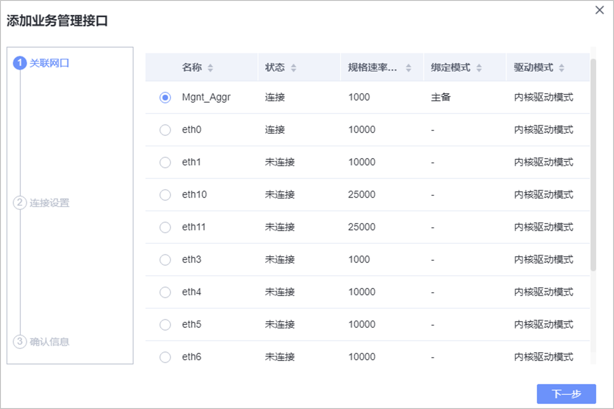
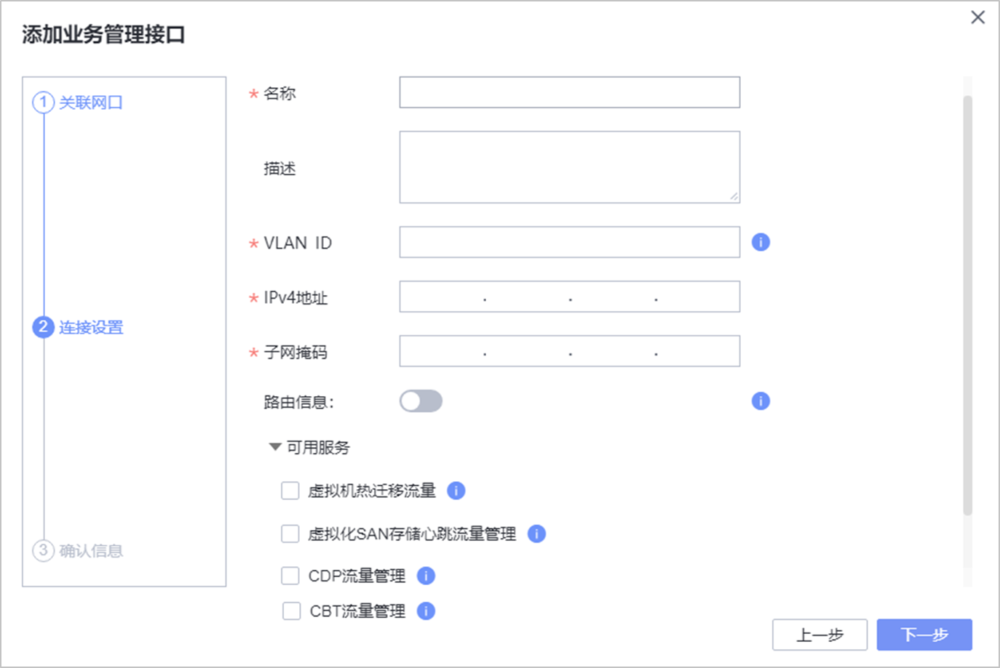
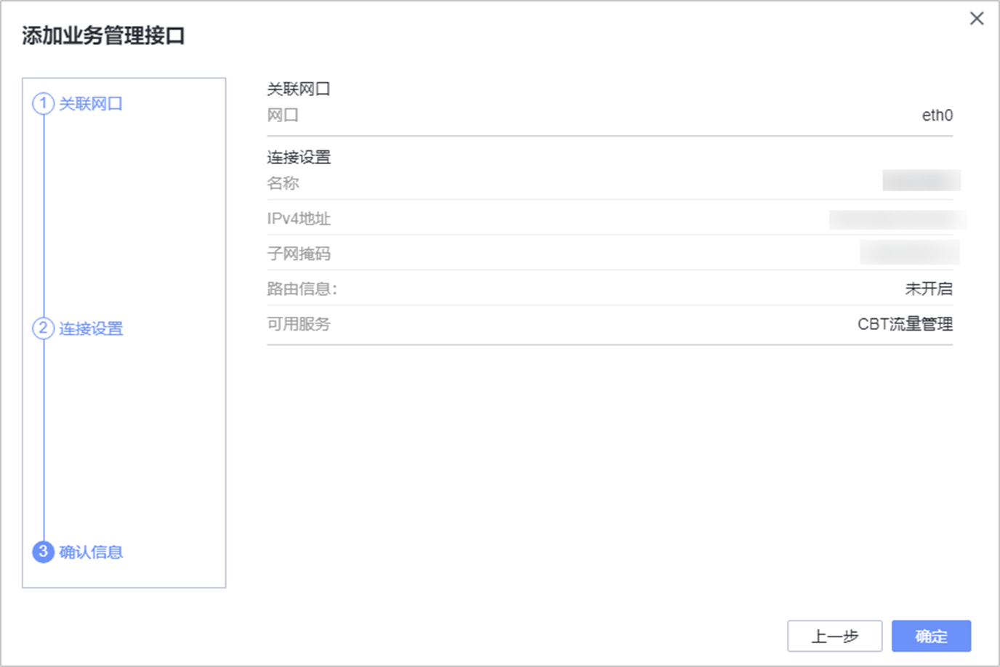
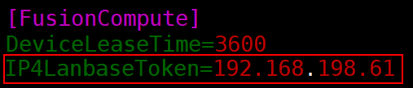

本章节介绍如何为CNA主机单独配置用于LAN-Base备份和恢复的备份网络平面。如果不单独配置备份网络平面，则仍使用管理平面进行备份恢复。
操作步骤
- 登录FusionCompute。
- 在左侧导航栏单击，进入“资源池”页面。
- 单击“主机”页签，选择需要配置独立备份网络平面的CNA主机。
- 选择“配置 > 网络 > 逻辑接口”，单击“添加业务管理接口”，进入“添加业务管理接口”界面。
- 在“关联网口”页面，选择该主机连接业务平面的网卡所对应的网口，单击“下一步”。

- 在“连接设置”页面，参考表1完成配置，并单击“下一步”。

- 在“确认信息”页面，确认当前配置，并单击“确定”。

- 使用root账户登录代理主机。
- 执行以下命令，打开配置文件。
vi /opt/DataBackup/ProtectClient/Plugins/FusionComputePlugin/conf/hcpconf.ini

命令中的/opt为ProtectAgent的安装目录，请根据实际安装目录替换。
- 在配置文件的[FusionCompute]域中，将IP4LanbaseToken的值修改为备份代理主机中能与6中配置的IP地址连通的IP，并保存配置文件。
例如：FusionCompute上规划的备份网络平面IP地址为192.168.198.22，备份代理主机能与其连通的IP地址为192.168.198.61，则将IP4LanbaseToken的值修改为192.168.198.61。
IP4LanbaseToken=192.168.198.61


执行此操作的备份代理主机只能用于备份恢复配置了独立备份网络平面的CNA主机上的虚拟机。